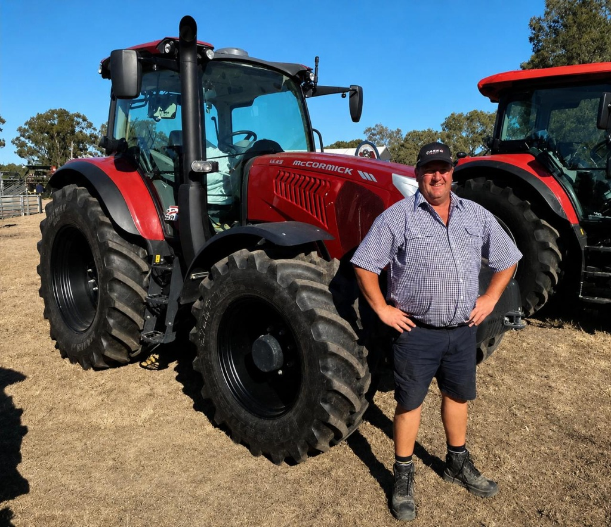

Your local agricultural equipment partner
Prestige Tractors Ballarat is your local dealer for the world's leading farm machinery brands — backed by genuine parts, factory-trained servicing and a dedicated local support team.
Built on knowledge, trust and local support
From our Wendouree base in Ballarat, Prestige Tractors has spent over two decades supporting Australian farmers, contractors and rural businesses with the machinery they depend on.
We represent the world's most respected brands — McCormick, Bobcat, Mahindra, Enorossi, DakenAg, RapidSpray, Grasshopper, Orsi and Muratori — and we stand behind every machine with genuine parts and factory-trained servicing.
Excellent product knowledge, workmanship and support is the backbone of everything we do. We combine the resources and brand range of a major multi-brand dealership with the personal service of a local, family-focused team.


The Prestige difference
The world's leading machinery, locally supported
Nine premium brands across tractors, hay, spraying, cultivation and grounds care — all under one roof.
The people behind Prestige
Sales, parts and workshop — local experts ready to help.